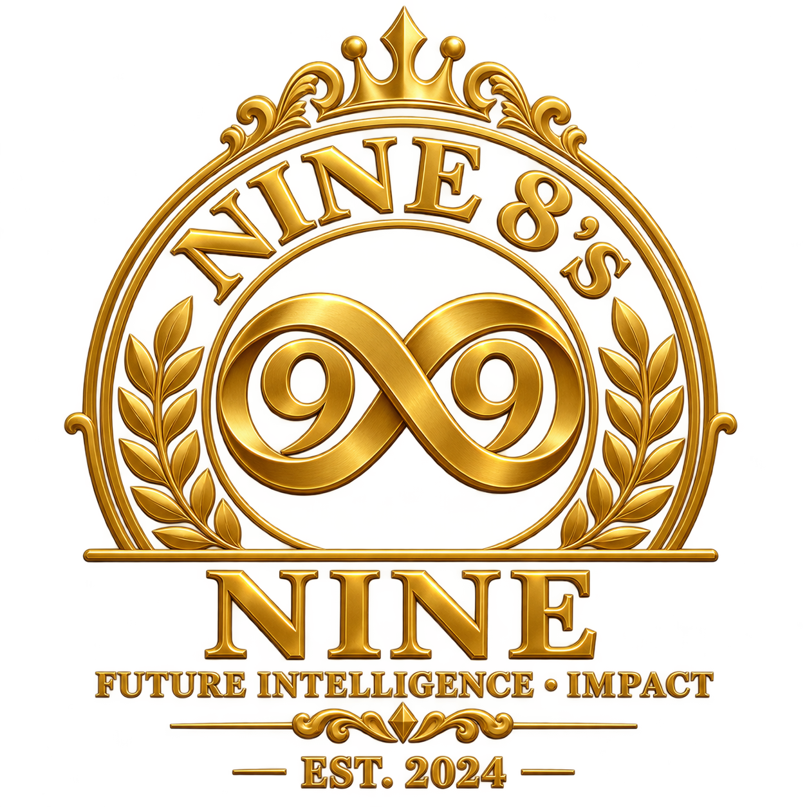

Experts | Tools | Templates — From the Book — ESG Master ClassesBy Dr. SNK · A 98s9 Production

MEASURE · ACT · REFLECT
ESG Checklist
Choose priorities across Environmental, Social and Governance responsibility.
Entries stay in this browser. Export a backup to keep a copy.
02 · ACT
ESG action checklist
16 chapter-based practice areas across Environmental, Social and Governance responsibility, plus your personal actions.
Source coverage: 5 Environmental entries from Chapter 24 §3, 5 Social sections from Chapter 25, and 6 Governance sections from Chapter 26. The original paragraphs are preserved. Status counts support reflection; they do not certify ESG performance.
Record commitments and outcomes rather than other people’s private details. Social actions should respect people’s choices and consent; governance reflection is a learning aid, not a way to monitor or rank others.
SOURCE & GUIDE
How to use this tool
Chapters 24–26 · Ch 24 updated.docx
ESG Checklist
Choose priorities across Environmental, Social and Governance responsibility.
The 16 practice areas preserve the source paragraphs: 5 Environmental, 5 Social and 6 Governance. Add personal priorities, record a baseline and measurable target, assign an owner and review date, and track evidence. Completion counts are a learning aid, not a certified ESG score.
Saving, backups & privacy
This is an independent static tool. Entries are stored only in this browser, under a tool-specific key. Other tools’ records are not changed. Export JSON for a restorable backup; CSV is a readable report. Imports are validated and require confirmation before replacing this tool’s entries. You can import an earlier combined-toolkit backup: only this tool’s relevant section is used.
Data are not uploaded. Browser storage may be unavailable or cleared; export a backup before closing when saving is unavailable. Store commitments and evidence without unnecessary personal details. This tool does not monitor or rank others.